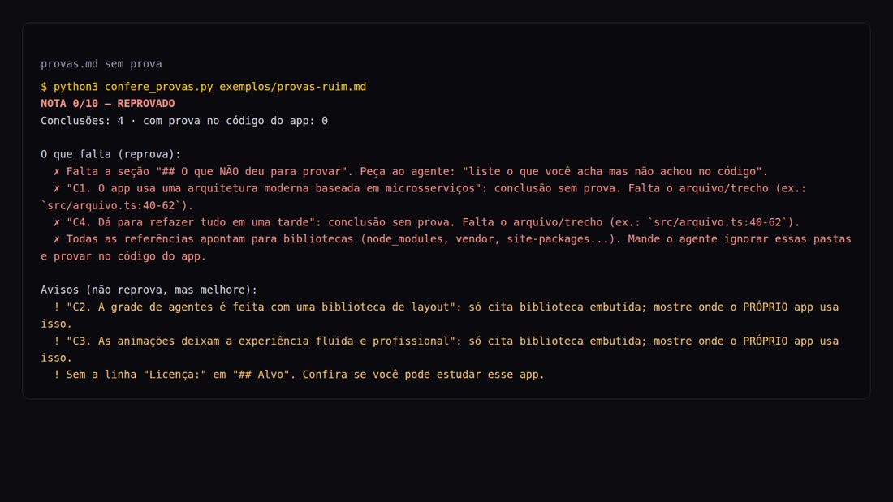
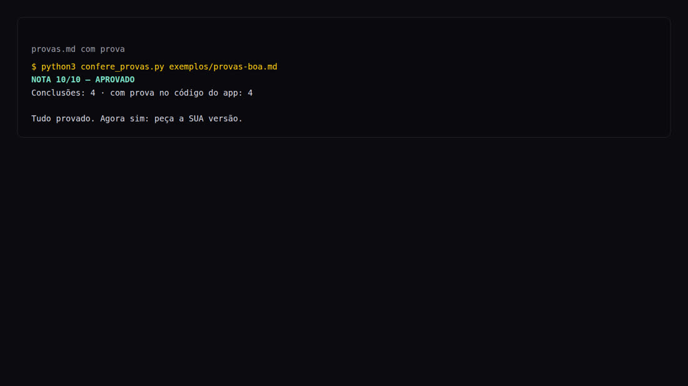

Four rules, three ready-made prompts, and a checker that rejects the agent when it guesses.
REA with proof is an open, free kit for anyone who uses an AI agent (Claude Code, Codex, or the dsh harness) to study an app and build their own version. The problem: the agent says it understands how the app works and makes up what it hasn’t seen. The kit includes 4 rules, 3 ready-made prompts (agent dashboard, lead reactor, and rebuilt site), and a checker in Python that rejects the evidence file when proof is missing. To use it, you need Python 3 and an AI agent in the terminal.
The kit is MIT licensed. Full text of the rules: REGRAS.md (in Portuguese).
Without proof, the agent writes a convincing paragraph. With proof, each sentence points to a file and a line you can open.
C1. The app uses a modern architecture
based on microservices.
Confidence: high
Sounds good. You have no way to check. Sometimes it’s true; sometimes it’s a guess.
C1. Each agent is a card in a grid - Proof: `src/components/AgentGrid.tsx:12-48` - Excerpt: `repeat(auto-fill, minmax(280px, 1fr))`
Open the file at line 12 and see for yourself. If it’s not there, the agent got it wrong.
Paste them along with any request like "study this app and make mine".
Each conclusion with the file and excerpt that proves it, plus the section "O que NÃO deu para provar".
Tell it to ignore node_modules, vendor, and site-packages. Proving it with a library means explaining the library, not the app.
Your own software or open source software with a license that allows you to study it. Then, YOUR version, with your name and look.
Colors with codes, fonts, motion, and density in a design brief. That’s what separates an ugly dashboard from a good screen.
Every request in the kit has two phases. The agent only builds after the checker approves the proof file.
In Portuguese, with [brackets] where you swap in your own details. They work in Claude Code, Codex, or the dsh harness. The agents in the builds are simulated: nothing calls AI or an API, and no real messages are sent.
Studies how an open source app shows several agents side by side, then builds a dashboard with 6 live agents for a business.
Studies how an open source app splits a request into tasks for worker agents, then builds the lead workflow.
Maps YOUR site (sections, fonts, scripts, buttons) and rebuilds it as a premium version in your own words.
curl, without installing anythingA Python file that uses only the standard library and doesn’t need internet access. Reads provas.md and returns a score from 0 to 10, APROVADO or REPROVADO, and a list of what’s missing. Exits with code 0 (approved), 1 (rejected), or 2 (couldn’t read the file).
src/arquivo.ts:40-62);The repository’s bad example, checked:
python3 confere_provas.py exemplos/provas-ruim.md NOTA 0/10 — REPROVADO Conclusões: 4 · com prova no código do app: 0 O que falta (reprova): ✗ Falta a seção "## O que NÃO deu para provar". Peça ao agente: "liste o que você acha mas não achou no código". ✗ "C1. O app usa uma arquitetura moderna baseada em microsserviços": conclusão sem prova. Falta o arquivo/trecho (ex.: `src/arquivo.ts:40-62`). ✗ "C4. Dá para refazer tudo em uma tarde": conclusão sem prova. Falta o arquivo/trecho (ex.: `src/arquivo.ts:40-62`). ✗ Todas as referências apontam para bibliotecas (node_modules, vendor, site-packages...). Mande o agente ignorar essas pastas e provar no código do app. Avisos (não reprova, mas melhore): ! "C2. A grade de agentes é feita com uma biblioteca de layout": só cita biblioteca embutida; mostre onde o PRÓPRIO app usa isso. ! "C3. As animações deixam a experiência fluida e profissional": só cita biblioteca embutida; mostre onde o PRÓPRIO app usa isso. ! Sem a linha "Licença:" em "## Alvo". Confira se você pode estudar esse app.
The good example (exemplos/provas-boa.md) is here NOTA 10/10 — APROVADO. Both use a fictional app to show the format.
The checker runs on any computer with Python. REA is optional: it helps the agent see inside apps and websites.
For the checker and tests. Check:
python3 --version
Claude Code, Codex, or the dsh harness. Any one that can read files and run commands in the folder.
REA, the harness, and an open model are installed in another step-by-step guide:
Commands for Linux, Mac, or WSL. On Windows without WSL, replace python3 with py.
Clones the repository and checks that the checker works.
git clone https://github.com/inematds/rea-com-provas.git cd rea-com-provas python3 -m unittest discover tests # should end with OK
An open-source app (download its code) or your own website. Open the license file before doing anything.
git clone https://github.com/[dono]/[app-open-source].git ~/estudo/app cat ~/estudo/app/LICENSE # MIT, Apache-2.0, BSD, GPL…? Then you can study it
Copy the template and replace the [brackets]: colors with codes, fonts, motion, and density. The template already includes a filled-in example in the INEMA style.
cp brief/MODELO-brief-design.md ~/estudo/brief.md
Open the file at prompts/, replace the [brackets], and paste the text block into your agent, opened in the study folder. It only does phase 1 (study) and stops.
cd ~/estudo claude # or: codex — and paste the text from prompts/a-painel-de-agentes.md
The request itself tells the agent to run the checker. Run it yourself too: this is your "ask for proof" step.
python3 ~/rea-com-provas/confere_provas.py provas.md python3 ~/rea-com-provas/confere_provas.py provas.md --json # same result in JSON
REPROVADO? Paste the "O que falta" list back into the agent and ask it to fix the issues. Open 2 or 3 proofs in the editor and check whether the text is really on that line: the checker checks the format; you check the content.
Only with APROVADO. Write this in the agent:
pode construir
At the end, it tells you how to open it, what was left out, and what needs manual testing.
On 11/08/2026, we ran build C (method 1, without REA) in Claude Code, using the subscription, with inema.club as "your website." Both phases ran at once, without intervention. Numbers measured.
Each one has a line from the saved HTML and a copied excerpt.
SCORE 10/10 — APROVADO, with all 23 conclusions proven in the page code.
We opened 4 cited lines (72, 113, 144, 161): the excerpt was there.
472 s and 42 agent turns. It produced a 94 KB index.html, with no horizontal scrolling at 390 px or 1440 px.
What the agent itself listed as a limitation: the original website's fonts and colors are in a CSS file that was not saved (only the HTML), and it couldn't open a browser to test the mobile layout (we checked afterward). Files from this run in the repository: exemplos/rodada-real (in Portuguese) (request used, provas.md, saved HTML, and new version).


| File | What it’s for |
|---|---|
REGRAS.md | The 4 rules and the safety and licensing notice. |
prompts/ | The 3 build plans: a-painel-de-agentes, b-reator-de-leads, c-site-refeito. |
provas/MODELO-provas.md | The format of the proof file the agent must provide. |
confere_provas.py | The checker: score, APROVADO/REPROVADO, and what’s missing. |
brief/MODELO-brief-design.md | Design brief template, with a filled-in example in the INEMA style. |
exemplos/ | provas-boa.md (approved), provas-ruim.md (rejected), and the real round. |
tests/ | Checker tests, no internet required. |